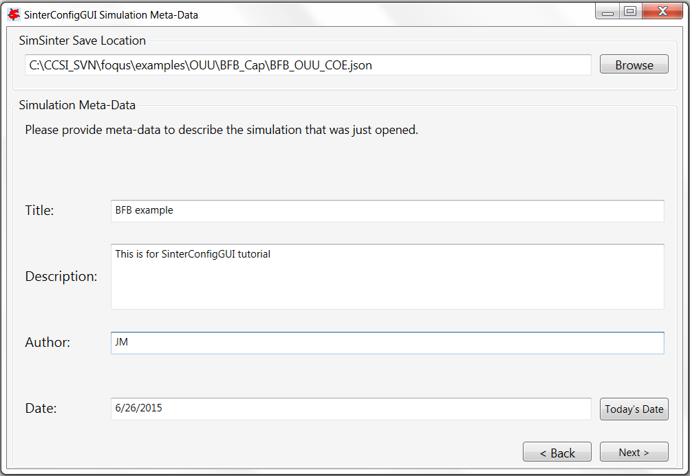
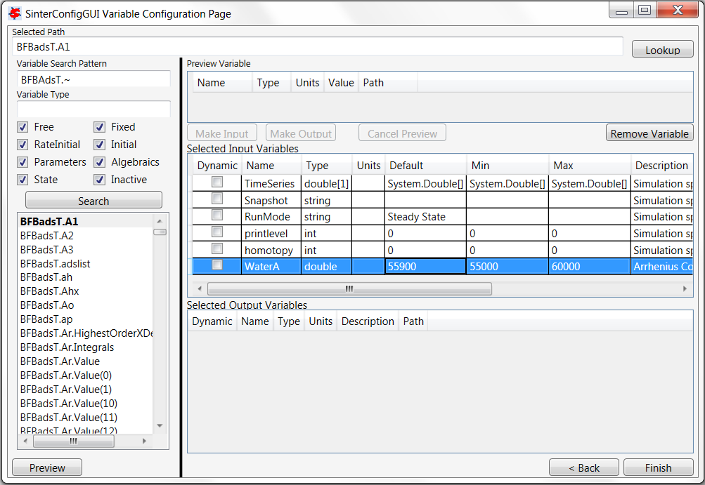
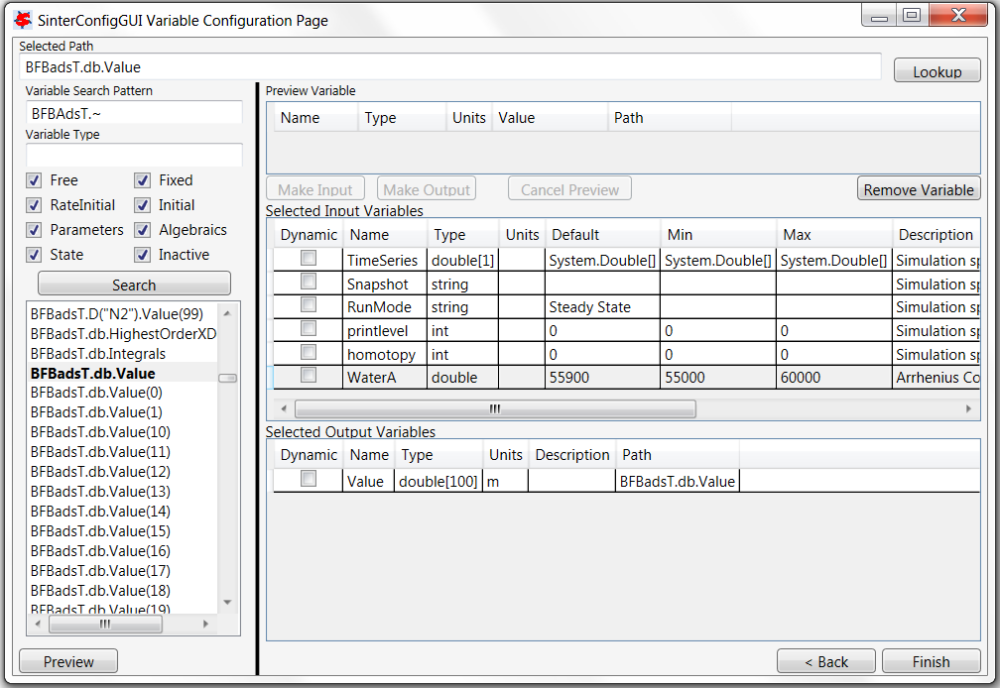

Aspen Custom Modeler Configuration¶
The “SinterConfigGUI” can be launched from FOQUS, via the Create/Edit button found in File\(\rightarrow\) Add/Update Model to Turbine or “SinterConfigGUI” may be run on its own by selecting SimSinter \(\rightarrow\) SinterConfigGUI from the Start menu.
The splash window displays, as shown in Figure [fig.sinter.acm.splash]. The user may click the splash screen to proceed, or wait ten seconds for it to close automatically.

SinterConfigGUI Splash Screen
- The SinterConfigGUI Open Simulation window displays (Figure [fig.sinter.acm.openpage]). If “SinterConfigGUI” was opened from FOQUS, the filename text box already contains the correct file. To proceed immediately click Open File and Configure Variables or click Browse to search for the file. For this tutorial, the ACM model for bubbling fluidized bed adsorber installed in the FOQUS examplesOUUBFB_Cap folder is selected (BFB_OUU_COE.acmf). Once the file is selected, click Open File and Configure Variables. The user can open a fresh ACM simulation (.acmf file) or an existing SimSinter configuration file. For this example, open a fresh simulation.Note: Opening the simulation may take a few minutes depending on how quickly Aspen Custom Modeler can be opened.

SinterConfigGUI Open Simulation Window
Aspen Custom Modeler starts in the background. This is so the user can observe things about the simulation while working on the configuration file.
The SinterConfigGUI Simulation Meta-Data window displays. (Figure [fig.sinter.acm.savename]). The first and most important piece of metadata is SimSinter Save Location at the top of the window. This is where the sinter configuration file is saved. The system attempts to locate a reasonable file location and file name; however, the user must confirm the correct file location, since it automatically overwrites whatever file name currently exists.

SinterConfigGUI Simulation Meta-Data Page Save Name Text Box
Continue to complete the remaining fields and then click Next (Figure [fig.sinter.acm.metadata]).
SinterConfigGUI Simulation Meta-Data Page with Data Completed
In the SinterConfigGUI Variable Configuration Page, (Figure [fig.sinter.acm.variableempty]) notice that the ACM Selected Input Variables: TimeSeries, Snapshot, RunMode, printlevel and homotopy are already included in the input variables. TimeSeries and Snapshot are for dynamic simulations. RunMode can be either “Steady State” or “Dynamic”. The Dynamic mode requires a dynamic ACM model. For this simulation, the RunMode is Steady State. The homotopy variable can be set to “1” so that homotopy is on by default. Notice that the Dynamic column (the first column) in each row contains a checkbox, enabling the user to select if the input variable in the row is a dynamic variable. Also notice that a Variable Type search box is on the left. This search is exactly the same as Variable Find on the Tools menu in Aspen Custom Modeler. Please refer to the ACM documentation for details on search patterns.

SinterConfigGUI Variable Configuration Page before Input
A search for everything in the “BFBAdsT” block has been selected. The following Search in Progress dialog is displayed (Figure [fig.sinter.acm.variableprogress]). Sometimes large searches take a while.

Search in Progress Bar Page
First, select the “BFBadsT.A1” scalar variable in the Selected Path field (Figure [fig.sinter.acm.variableselected]).

SinterConfigGUI Variable Configuration Page BFBadsT.A1 Selected
If the user double-clicks, presses Enter, or clicks Preview or Lookup, information displays in the Preview Variable section (Figure [fig.sinter.acm.variablepreview]). Here, the user can verify the variable choices.
SinterConfigGUI Variable Configuration Page BFBadsT.A1 Preview
“BFBadsT.A1” is the correct variable; therefore, click Make Input. Information displays in the Selected Input Variables section (Figure [fig.sinter.acm.variableinput]).
SinterConfigGUI Variable Configuration Page BFBadsT.A1 Made Input
Change the variable name from “BFBadsT.A1” to something more descriptive (e.g., “WaterA”). Set Name, Description and Min/Max as shown in Figure [fig.sinter.acm.variablename].
SinterConfigGUI Variable Configuration Page BFBadsT.A1 Change Name
One input variable is now displayed (Figure [fig.sinter.acm.vectorpreview]). At least one output variable is required. In this example, the vector of calculated bubble sizes is wanted. Scroll down under Search and select “BFBadsT.db.Value,” “BFBadsT.db.Value(0),” “BFBadsT.db.Value(1),” etc. If a name with a number in parenthesis at the end is selected, it is a specific entry in the vector. If a basic name is selected (“BFBadsT.db.Value”), the entire vector is displayed. Select the whole vector and click Preview.
SinterConfigGUI Variable Configuration Page Vector Preview
Click Make Output if the variable the user wants is selected. Notice that this variable has a unit “m” (Figure [fig.sinter.acm.vectoroutput]).
SinterConfigGUI Variable Configuration Page Vector As Output
Change the Name of the variable to “Diameter.” Bubble size is measured in meters; however, meters should be converted to millimeters (mm). Now, the output from the simulation should present bubble diameter in mm (Figure [fig.sinter.acm.vectorunits]). Internal to the simulation, the unit remains “m.”

SinterConfigGUI Variable Configuration Page Output Change Units
To add a single item in a vector, select “BFBadsT.Ar.Value(1)” and click Make Input (See Figure [fig.sinter.acm.vectorremoval]). To remove item that was just added, select it and click Remove Variable.
SinterConfigGUI Variable Configuration Page Removal Demo
Select the correct variable vector “BFBadsT.Ar.Value” and make it an input (Figure [fig.sinter.acm.vectorreadd]). Notice that a Default or Min/Max cannot be set in the GUI for a vector. The correct defaults (from the simulation) are set automatically. To change the Min/Max values, the user must edit the JSON file in a text editor.
SinterConfigGUI Variable Configuration Page Read Input
Click Next to display the SinterConfigGUI Vector Default Initialization window as shown in Figure [fig.sinter.acm.vectorinput]. Since the input variable “Value” is a vector, its default values can be modified in the window. In this case there is no need to change the values.

SinterConfigGUI Vector Default Initialization Input Page
The simulation is now setup. Save the configuration file by clicking Finish. The file is saved to the location specified on the SinterConfigGUI Simulation Meta-Data page. Clicking Finish will close the SinterConfigGUI, but NOT Aspen Custom Modeler. The user must close ACM manually.
If “SinterConfigGUI” was launched from FOQUS, the path to the configuration file is automatically passed to FOQUS. The next step in FOQUS is to click OK in the Add/Update Turbine Model window. FOQUS may then be used to upload it to the Turbine gateway. If “SinterConfigGUI” was not launched from FOQUS (e.g., it was launched from the Start menu), the configuration file name must be entered in FOQUS manually.